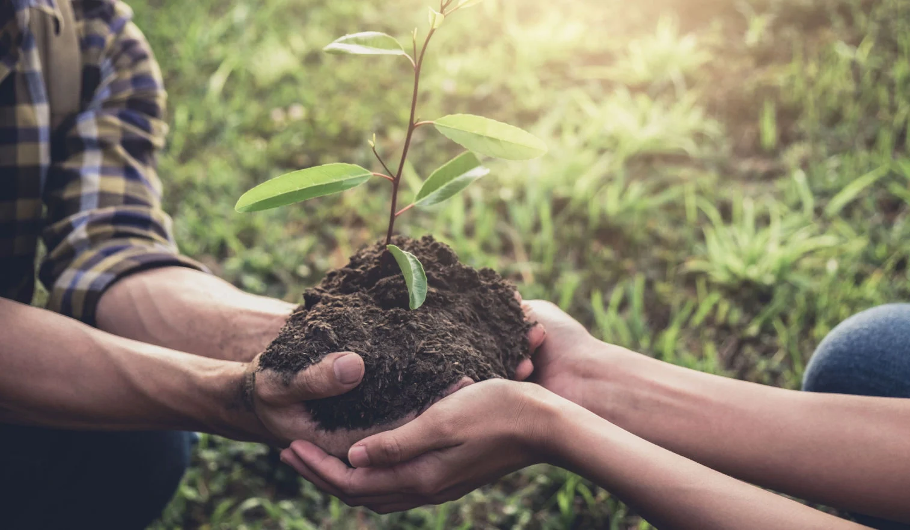

.jpg) |
 |  |
|---|---|---|
Para ayudar al medio ambiente es clave reducir el consumo de recursos, reciclar, y usar energías renovables. Reducir el uso de plásticos y optar por productos reutilizables también es fundamental. Promover el transporte sostenible, como caminar, usar bicicleta o el transporte público, contribuye a disminuir la contaminación.
Además, proteger y conservar la naturaleza plantando árboles y apoyando iniciativas ecológicas son acciones importantes para mantener el equilibrio ambiental. | Para reducir la deforestación es clave reforzar las leyes ambientales, promover prácticas agrícolas sostenibles y fomentar la reforestación. Además, es fundamental incentivar alternativas económicas que no dependan de la tala de árboles, como el ecoturismo y la explotación forestal responsable. La educación y la cooperación entre gobiernos, empresas y comunidades son esenciales para proteger los bosques. | El cuidado del agua consiste en usarla de manera eficiente, evitar su desperdicio y prevenir la contaminación de fuentes hídricas. Se deben aplicar prácticas como el ahorro en el hogar, el uso de tecnologías de tratamiento y fomentar la educación sobre la importancia de conservar este recurso. |